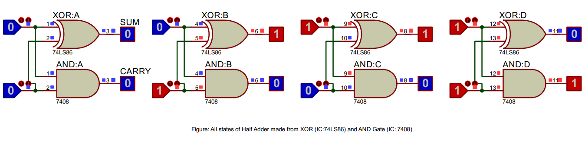
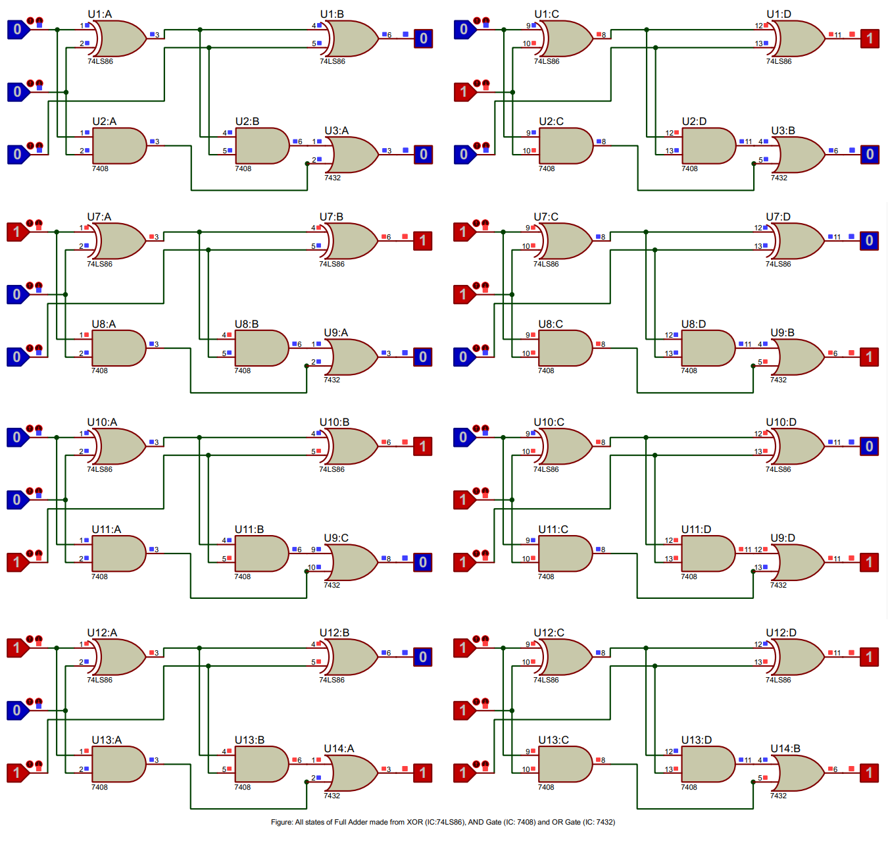

Adders and its types: Half Adders and Full Adders
Envision a world where everything is governed by digital systems. The inhabitants of this world constantly seek efficient ways to perform calculations, as the very fabric of their existence relies on them. Adders play a crucial role in ensuring that digital systems can execute tasks rapidly and effectively. An adder is an electronic device that performs the arithmetic operation of addition on binary numbers. Adders are indispensable components in computers and other digital systems, as they are the building blocks for more complex arithmetic operations.
In this world of digital systems, two prominent devices are known for their prowess in handling calculations: the Half Adder and the Full Adder.
- The Half Adder is designed to add two single-bit binary numbers, producing a sum and a carry. This simple adder is a foundational building block for digital circuits. As we delve deeper into the topic, we can explore its Boolean expressions:
$Sum = A \oplus B$$Carry = A \cdot B$
These expressions represent the XOR and AND operations, respectively. In more complex digital systems, multiple Half Adders can be combined to form Full Adders and even multi-bit adders, allowing the addition of numbers with multiple bits.
- The Full Adder is a more advanced type of adder that takes into account not only two input bits (A and B) but also a carry-in bit (Cin) from a previous addition. It produces a sum and a carry-out bit (Cout). The Full Adder's Boolean expressions are as follows:
$Sum = A \oplus B \oplus Cin$$Cout = (A \cdot B) + (Cin \cdot (A \oplus B))$
These expressions involve a combination of XOR, AND, and OR operations. This level of complexity allows the Full Adder to handle carry propagation, which is essential for multi-bit addition in digital systems.
These adders, working in tandem, enable the efficient performance of calculations across various digital systems.
As digital systems continue to evolve, more complex systems that require multi-bit binary addition are being developed. To meet this demand, Full Adders can be connected in a chain-like arrangement known as a Ripple Carry Adder. This configuration allows for the addition of larger binary numbers, extending the computational capabilities of digital systems. These multi-bit adders, such as Ripple Carry Adders and Carry Lookahead Adders, can perform addition on numbers with multiple bits, making them indispensable in digital systems such as microprocessors and digital signal processors.
Furthermore, adders play a vital role in many applications, including arithmetic logic units (ALUs), floating-point units (FPUs), and digital signal processing (DSP) hardware. Understanding Half Adders and Full Adders, their Boolean expressions, and applications can provide deep insights into the world of digital electronics and computer architecture.
Understanding the Intricacies of Adders
Both Half Adders and Full Adders are composed of simpler building blocks, known as logic gates. These gates, such as AND, OR, and XOR gates, cooperate in a specific sequence to execute binary addition and generate the appropriate sum and carry outputs. A deeper understanding of these adders is crucial for harnessing their potential and advancing the capabilities of digital systems.
Having delved into the world of adders, it's time to put this knowledge into practice. In the following section, we will explore how to practically verify the truth tables of Half Adders and Full Adders using Proteus software. This powerful platform is designed to simulate electronic circuits and bring them to life, offering an interactive experience that will deepen your understanding of Half Adders and Full Adders. This hands-on activity will shed light on their essential roles in digital systems, catering to a wide range of expertise levels, from beginners to seasoned professionals.
Procedures of Doing the Experiment
Half Adder
Title
Verification of Half Adder Truth Table Using Proteus Software
Aim
To validate the truth table of a Half Adder using Proteus software simulation with 74LS86 and 7408 gates.
Requirements
Proteus software, 74LS86 XOR gate IC, 7408 AND gate IC, Logic State, and Logic Probe tools.
Theory
A Half Adder is a digital circuit that performs binary addition of two single-bit numbers, producing a sum and a carry output. The Half Adder consists of an XOR gate (74LS86) and an AND gate (7408). The truth table of a Half Adder lists input-output combinations, providing a basis for verifying the circuit's functionality in a simulation.
Truth Table of Half Adder
| Input: A | Input: B | Sum | Carry |
|---|---|---|---|
| 0 | 0 | 0 | 0 |
| 0 | 1 | 1 | 0 |
| 1 | 0 | 1 | 0 |
| 1 | 1 | 0 | 1 |
Procedure
- Open Proteus, create a new schematic capture.
- Add the 74LS86 XOR gate IC, 7408 AND gate IC, Logic State, and Logic Probe (Big) from the pick device menu to the dashboard.
- Place the XOR gate, AND gate, Logic State, and Logic Probe tools onto the schematic.
- Connect the components to form a Half Adder circuit: A and B inputs to both XOR and AND gates, XOR output as Sum, AND output as Carry.
- Run the simulation and observe the Sum and Carry outputs for input combinations "00", "01", "10", "11".
- Verify the simulation results against the expected truth table of a Half Adder.
Result
The simulation results match the Half Adder truth table, validating its correct functionality.
Conclusion
The Half Adder truth table has been successfully verified using Proteus software, confirming its proper operation in digital circuits.
Full Adder
Title
Verification of Full Adder Truth Table Using Proteus Software
Aim
To validate the truth table of a Full Adder using Proteus software simulation with 74LS86, 7408, and 7432 gates.
Requirements
Proteus software, 74LS86 XOR gate IC, 7408 AND gate IC, 7432 OR gate IC, Logic State, and Logic Probe tools.
Theory
A Full Adder is a digital circuit that performs binary addition of three single-bit numbers, including a carry from a previous addition. It produces a sum and a carry output. The Full Adder consists of two XOR gates (74LS86), two AND gates (7408), and an OR gate (7432). The truth table of a Full Adder lists input-output combinations, providing a basis for verifying the circuit's functionality in a simulation.
Truth Table of Full Adder
| Input: A | Input: B | Carry In (Cin) | Sum | Carry Out (Cout) |
|---|---|---|---|---|
| 0 | 0 | 0 | 0 | 0 |
| 0 | 1 | 0 | 1 | 0 |
| 1 | 0 | 0 | 1 | 0 |
| 1 | 1 | 0 | 0 | 1 |
| 0 | 0 | 1 | 1 | 0 |
| 0 | 1 | 1 | 0 | 1 |
| 1 | 0 | 1 | 0 | 1 |
| 1 | 1 | 1 | 1 | 1 |
Procedure
- Open Proteus, create a new schematic capture.
- Add the 74LS86 XOR gate IC, 7408 AND gate IC, 7432 OR gate IC, Logic State, and Logic Probe (Big) from the pick device menu to the dashboard.
- Place the XOR gates, AND gates, OR gate, Logic State, and Logic Probe tools onto the schematic.
- Connect the components to form a Full Adder circuit: A and B inputs to the first XOR gate (74LS86), A and B inputs to the AND gates (7408), XOR gate output to the second XOR gate (74LS86) and one AND gate (7408), Carry In (Cin) input to the second XOR gate and the other AND gate (7408), both AND gate outputs to the OR gate (7432), second XOR gate output as Sum, and OR gate output as Carry Out (Cout).
- Run the simulation and observe the Sum and Carry Out outputs for all possible input combinations of A, B, and Carry In (Cin).
- Verify the simulation results against the expected truth table of a Full Adder.
Result
The simulation results match the Full Adder truth table, validating its correct functionality.
Conclusion
The Full Adder truth table has been successfully verified using Proteus software, confirming its proper operation in digital circuits.
Want to know more? Carry on!
1. Half Adder
A half adder is a combinational circuit that performs the addition of two single-bit binary numbers. It has two input bits (A and B) and produces two output bits: a Sum bit (S) and a Carry bit (C).
1.1 Half Adder Implementation
A half adder can be implemented using an XOR gate (IC 74LS86) and an AND gate (IC 7408).
Sum (S) = A ⊕ B
Carry (C) = A ⋅ B
1.2 Half Adder Applications
Half adders are used in various digital systems, such as digital signal processing and binary arithmetic operations, where simple addition of binary numbers is required. However, they are limited as they do not handle carry-in from a previous stage, making them unsuitable for multi-bit addition.
2. Full Adder
A full adder is an extension of the half adder as it can add three binary numbers (A, B, and a Carry-in Cin) and produces a Sum bit (S) and a Carry-out bit (Cout). Full adders are capable of handling carry-in from a previous stage, making them ideal for multi-bit addition operations.
2.1 Full Adder Implementation
A full adder can be implemented using two half adders and an OR gate (IC 7432).
Step 1: Add A and B using the first half adder (HA1).
Step 2: Add the Sum of HA1 (S1) and Carry-in (Cin) using the second half adder (HA2).
Step 3: Combine the Carry-out of HA1 (C1) and HA2 (C2) using an OR gate.
Sum (S) = S2
Carry-out (Cout) = C1 ⋅ C2
2.2 Full Adder Applications
Full adders are widely used in digital systems, such as arithmetic logic units (ALUs), digital signal processing, and multi-bit addition operations in various computing devices. They can be chained together to form n-bit adders for larger binary numbers.
2.3 Advanced Concepts for computer science Students
In recent years, research has been conducted on optimizing full adder circuits using novel technologies, such as quantum computing and nanotechnology. These advancements aim to minimize power consumption, increase speed, and reduce the physical size of the circuits, which can significantly improve the performance of modern digital systems.
2.4 Full Adder Implementation in C++
//cpp code
#include <iostream>
using namespace std;
// Half Adder function
void half_adder(bool A, bool B, bool &Sum, bool &Carry) {
Sum = A ^ B;
Carry = A & B;
}
// Full Adder function
void full_adder(bool A, bool B, bool Cin, bool &Sum, bool &Cout) {
bool S1, C1, S2, C2;
half_adder(A, B, S1, C1);
half_adder(S1, Cin, S2, C2);
Sum = S2;
Cout = C1 | C2;
}
int main() {
bool A, B, Cin, Sum, Cout;
// Test the full adder with sample inputs
A = 1;
B = 0;
Cin = 1;
full_adder(A, B, Cin, Sum, Cout);
cout << "A: " << A << ", B: " << B << ", Cin: " << Cin << endl; cout << "Sum: " << Sum << ", Carry-out: " << Cout << endl; return 0;
}FAQ's
- What are Half Adders?
A half adder is a simple digital logic device used in arithmetic circuits. It's designed to process the addition of two single-bit binary numbers, generating a sum and a carry. However, it doesn't take into account any carry that might have been generated from previous stages, hence the name "half" adder.
- What is the working Mechanism of Half Adder?
The half adder operates using two basic logic gates: an XOR (Exclusive OR) gate and an AND gate. The XOR gate generates the sum of the two binary inputs, and the AND gate produces the carry. The carry output represents whether there was a 'carry' from adding the two input bits.
- How can we design the Truth table of Half Adder?
The truth table of a half adder can be designed by listing all possible inputs (combinations of 0 and 1 for both input bits) and then determining the resulting sum and carry. Here's an example:
A B | Sum Carry --------------- 0 0 | 0 0 0 1 | 1 0 1 0 | 1 0 1 1 | 0 1
- How can We implement the Half Adder in Proteus ISIS using two Logic Gates?
First, set up the Proteus ISIS environment and import the XOR and AND gates from the library. Connect the two input terminals to both the XOR and AND gates. Connect the output of the XOR gate to the 'Sum' output and the output of the AND gate to the 'Carry' output. Once set up, you can simulate the design to check its operation.
- What are Full Adders?
A full adder is another type of digital device used in arithmetic circuits. It's an extension of the half adder, designed to add three binary bits. The full adder takes into account the carry from previous stages, making it suitable for multi-bit addition operations in digital systems.
- What is the working Mechanism of Full Adder?
The full adder uses two half adders and an OR gate. The first half adder adds the input bits, while the second half adder adds the output sum from the first half adder and the input carry. The OR gate combines the carry outputs from both half adders to produce the final carry.
- How can we design the Truth table of Full Adder?
The truth table of a full adder can be designed by listing all possible combinations of three binary input bits (A, B, and Carry-In) and then determining the resulting Sum and Carry-Out. Here's an example:
A B Cin | Sum Cout ------------------- 0 0 0 | 0 0 0 0 1 | 1 0 0 1 0 | 1 0 0 1 1 | 0 1 1 0 0 | 1 0 1 0 1 | 0 1 1 1 0 | 0 1 1 1 1 | 1 1
- How can We implement the Full Adder in Proteus ISIS using 2 half adders and OR Logic Gates?
To implement a full adder in Proteus ISIS, you need to first set up two half adders and an OR gate. Connect the first two input bits to the first half adder. Then, connect the output sum of the first half adder and the third input bit (Carry-In) to the second half adder. Finally, connect the carry outputs from both half adders to the OR gate. The output of the OR gate will represent the Carry-Out, and the Sum output of the second half adder will be the Sum of the full adder.
Challenge Yourself!
- How can multiple Full Adders be connected to form a multi-bit adder?
- What is the difference between a Ripple Carry Adder and a Carry Look-Ahead Adder?
- What is the role of a Half Adder in the design of a Binary Subtractor?
- How can the speed of arithmetic operations be improved in digital circuits using Adders?
- How does a Half Adder differ from a Full Adder in terms of power consumption and circuit complexity?
- What considerations should be taken into account when implementing Adders in Field Programmable Gate Arrays (FPGAs)?